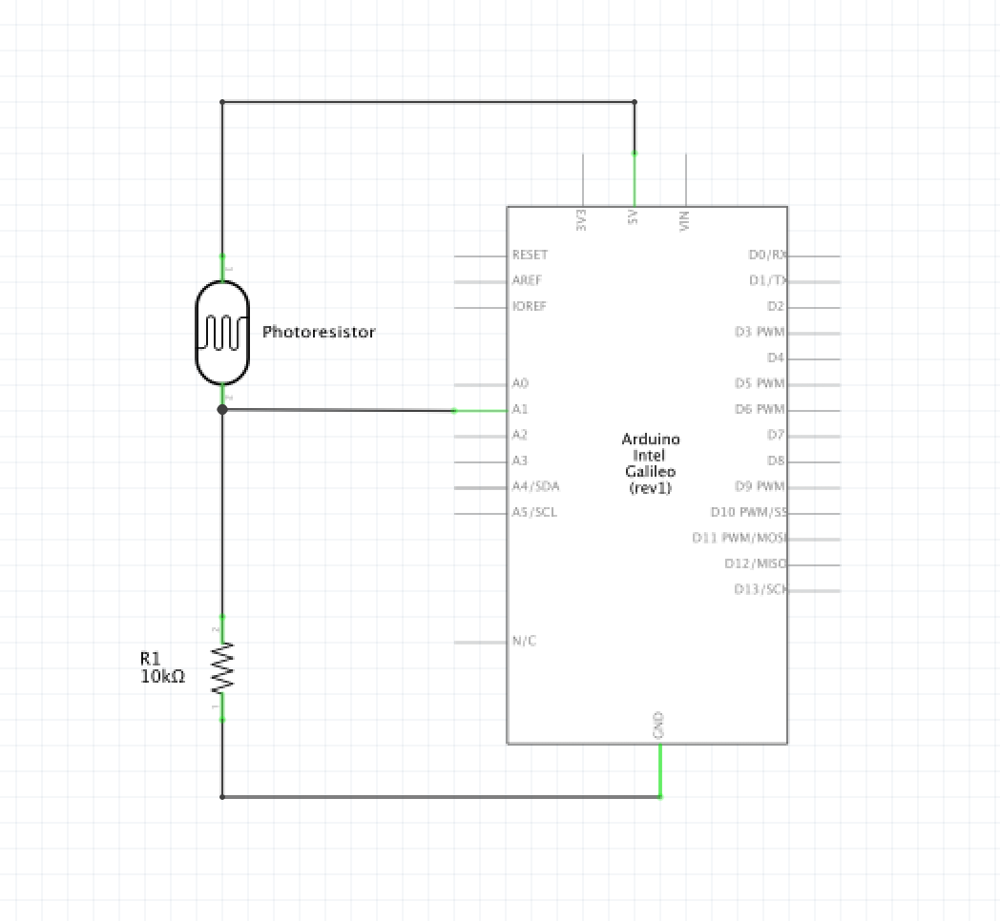

Pari Gabriel's Assignment 6!
Here is all the documentation for assignment 6.
 Circuit
Circuit
 Schematic
var serial; // variable to hold an instance of the serialport library
var portName = '/dev/cu.usbmodem144101' //rename to the name of your port
var datain; //some data coming in over serial!
var xPos = 0;
let img; // Declare variable 'img'.
function setup() {
serial = new p5.SerialPort(); // make a new instance of the serialport library
serial.on('list', printList); // set a callback function for the serialport list event
serial.on('connected', serverConnected); // callback for connecting to the server
serial.on('open', portOpen); // callback for the port opening
serial.on('data', serialEvent); // callback for when new data arrives
serial.on('error', serialError); // callback for errors
serial.on('close', portClose); // callback for the port closing
serial.list(); // list the serial ports
serial.open(portName); // open a serial port
//create a canvas to display images on
createCanvas(800, 530);
//load image from an online source because image files cannot be hosted locally with this code
img = loadImage('https://cdn.shopify.com/s/files/1/0901/8716/products/playing-cards-noc-deck-v3s-kingwide_2048x.png?v=1497136264'); // Load the image
//create solitaire-green colored background
background(0x00, 0x60, 0x00);
}
// get the list of ports:
function printList(portList) {
// portList is an array of serial port names
for (var i = 0; i < portList.length; i++) {
// Display the list the console:
print(i + " " + portList[i]);
}
}
function serverConnected() {
print('connected to server.');
}
function portOpen() {
print('the serial port opened.')
}
function serialError(err) {
print('Something went wrong with the serial port. ' + err);
}
function portClose() {
print('The serial port closed.');
}
function serialEvent() {
if (serial.available()) {
datain = Number(serial.readLine());
}
}
function graphData(newData, img) {
// map the range of the input to the window height:
var yPos = map(newData, 250, 700, 0, height);
// Displays the image at point (xPos, yPos) at 1/6th size
image(img, xPos, yPos + 50, img.width / 6, img.height / 6);
// at the edge of the screen, go back to the beginning:
if (xPos >= width) {
xPos = 0;
// clear the screen by resetting the background:
background(0x00, 0x60, 0x00);
} else {
// increment the horizontal position for the next reading:
xPos++;
}
}
function draw() {
graphData(datain, img);
}
// map the range of the input to the window height:
var yPos = map(newData, 250, 700, 0, height);
// Displays the image at point (xPos, yPos) at 1/6th size
image(img, xPos, yPos + 50, img.width / 6, img.height / 6);
 The circuit in action.
The circuit in action.